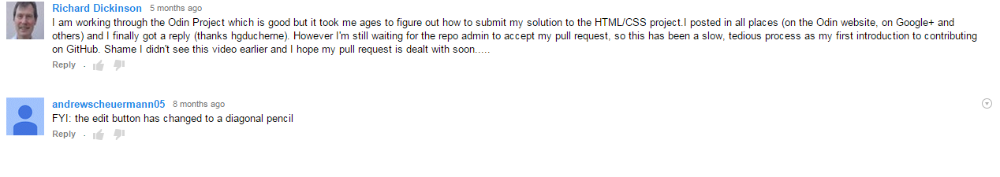

Contributing to Open Source Part I: The Easy Way
The Odin Project
Published on Feb 27, 2014
How do you contribute to open source? In this video, I'll describe the easiest way to make a simple contribution to an open source project -- without using the command line, a text editor, "forking a repo", or even touching Git outside of Github. I'll also describe what kinds of contributions open source software projects are typically looking for. As an example, I use submitting a student solution to a web development exercise from The Odin Project, a free online curriculum for learning web development with Ruby on Rails. You can find more information about that project at http://theodinproject.com.
ALL COMMENTS (2)
